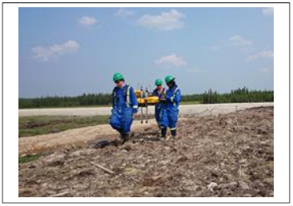
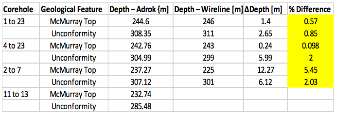
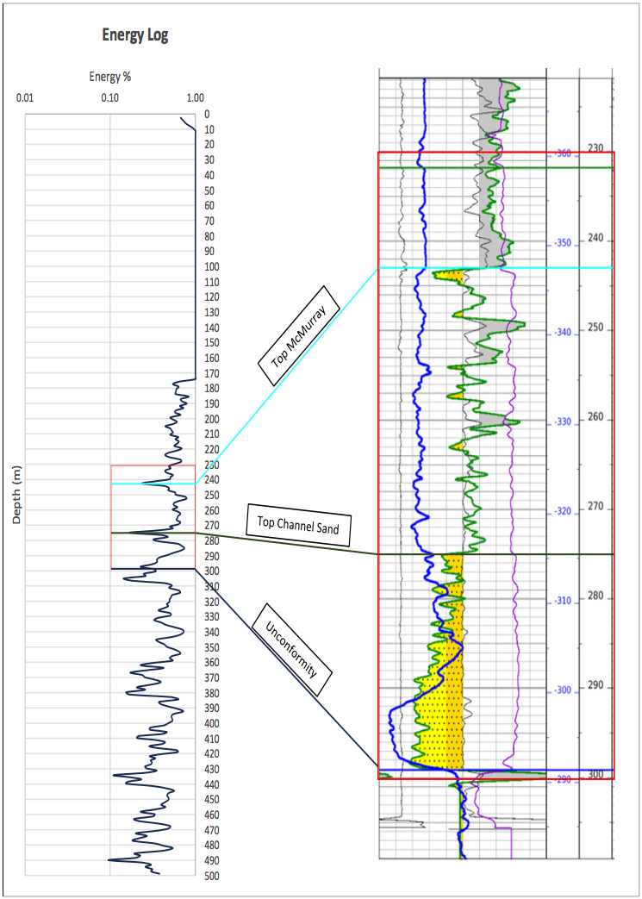
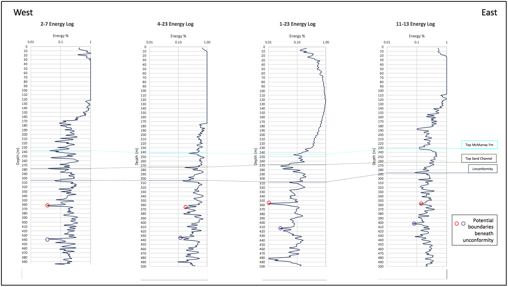
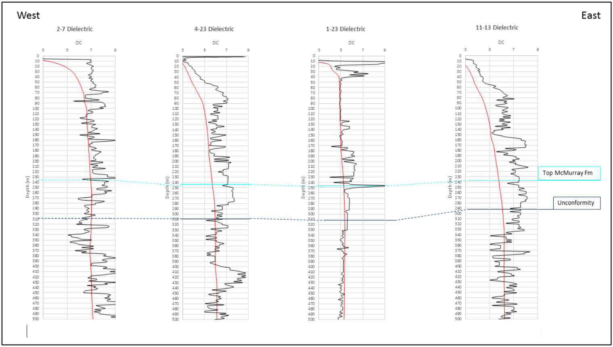
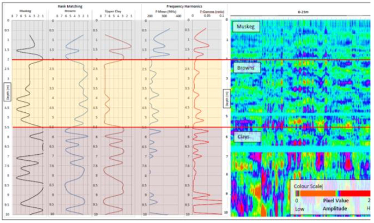
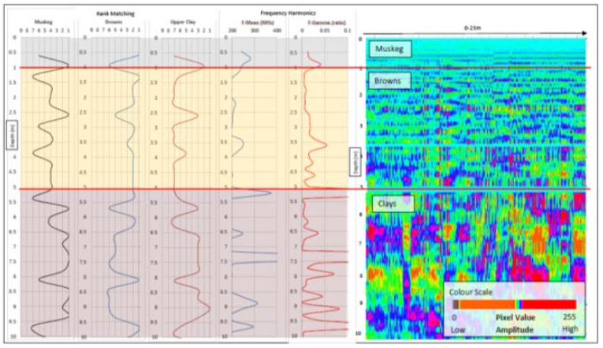
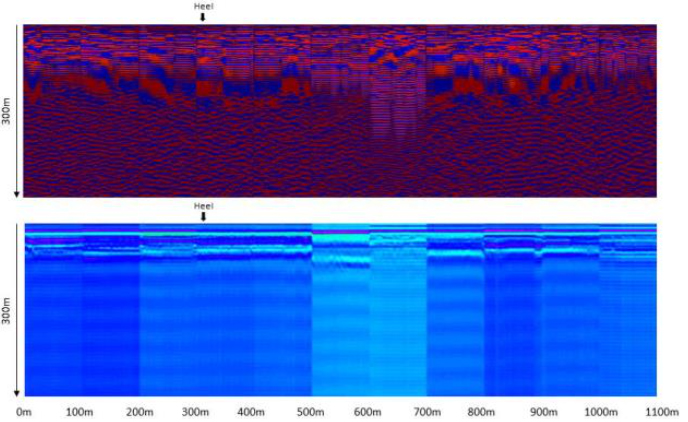
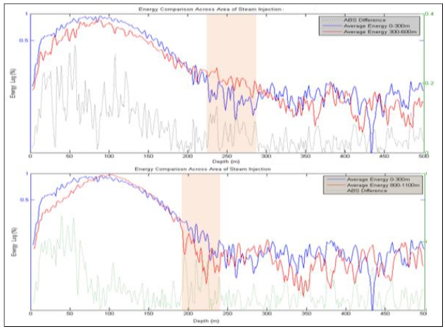
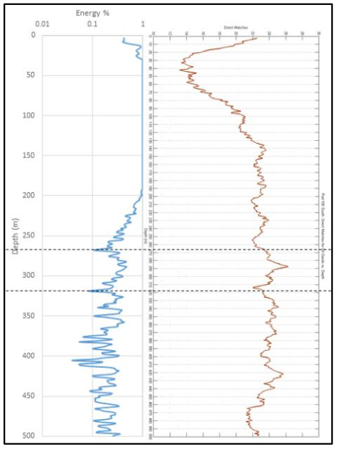

Efficacy test of Adrok’s ADR technology to commercial Oil Sands exploration, specifically for measuring subsurface oil layers and related stratigraphy as well as peat thicknesses in Alberta, Canada
Project aims
The overall survey objective was to allow a major Canadian Integrated Energy Company to evaluate the applicability of Adrok’s ADR Scanner across the following “test” parameters:
- Stratigraphy prediction at core-hole sites;
- Shallow subsurface mapping; particularly the mapping of the top peat like layer (“muskeg”) and the thickness of the underlying sand/clay layers (“Browns & Clays”);
- Steam chamber mapping at ‘producing’ well sites;
- Fault identification (although this work was not in the original schedule).
A number of Adrok techniques were used to provide the necessary data and these needed to be adapted to overcome the challenging local conditions; not least the soft and swamp-like nature of the “muskeg”.
Exploration/Project challenges
The four ‘tests’ set by the client covered a range of the Adrok capabilities. As such each scan required an adaption of both technique and software/hardware settings. The results discussed in this document do highlight some limitations of using one set of equipment for all types of output; particularly in shallow ground applications. However the results are compelling enough to indicate success in each area of assessment and hint at a strong potential for future survey requirements in these types of settings.
Geological context
Oil sands are found in about 70 countries in the world, from Venezuela and Trinidad/Tobago in the Caribbean to as far north as Russia. By far, the main deposits are hosted within Cretaceous rocks of Venezuela and Canada, and among these, the largest is the Athabasca oil sands of northeast Alberta.
Oil sands consist of bitumen (soluble organic matter, solid at room temperature) and host sediment, with associated minerals, and excluding any related natural gas. The crude bitumen within the sands is a naturally occurring viscous mixture of hydrocarbons (generally heavier than pentane), often with sulphur compounds, that will not flow to a wellbore in its natural state. Upon heating, the bitumen will flow, and on a hot summers’ day, bitumen oozes from the outcrops along the river valleys in northeast Alberta.
Extraction techniques range from simple open cast mining to “in-situ” techniques such as Steam Assisted Gravity Drainage (SAGD) and Cyclic Steam Stimulation (CSS).
The “in-situ” techniques in particular create a number of challenges for the operators. The tests for this survey were therefore designed to ascertain if ADR could help.
Benefits for the client
Mapping the resource and identifying any faults through stratigraphy prediction enhances operations and helps with the all-important monitoring. Conversely an ability to map the steam chambers has far reaching implications; not least ensuring that water loss is kept to a minimum, but also ensuring that land parcels are exploited safely and to the maximum possible usability. There are no other current technologies that can reliably carry out these functions.
Placing of drilling pads in soft, swamp like areas is massively expensive and fraught with logistical issues. Key to minimising the costs and overcoming the various problems is finding a reliable source of the harder clay sub-surface for pad building. Equally as important is finding areas where the superfluous ‘muskeg’ and ‘browns’ layers are at their thinnest. Currently soil assessment surveys are completed using augers and in some cases GPR. Both of these techniques fail to give accurate results below a couple of metres.
 Figure 1: ADR equipment in use at the client’s siteAdrok’s results
Stratigraphy Prediction
Of the four “tests” proposed by the client, the area in which Adrok’s technology appears to perform best is regarding stratigraphy prediction at the core-hole sites.
The top McMurray formation, unconformity, and a sand-shale boundary all appear to correlate consistently with low energy log values.
 Figure 2: from these results it can be seen that ADR is hitting the targets with an accuracy of between 95% – 98%The clearest correlation between Adrok’s data and the stratigraphy of the training core-holes can be observed in the Energy log.
An example of such correlation is presented in Figure 3 (below). In addition to the top McMurray and Unconformity horizons, a change in energy response is also visible at the top of the thick channel sand at around 270m depth. This corresponds to the top Lower McMurray (based on Hein et al. (2007)’s description of the McMurray Fm’s gamma ray signature).
Having established these relationships, such boundaries can be further predicted in ‘blind test’ core-holes. As shown in Figure 4 (below).
Although the energy relationship is compelling, at least one other data set is preferable to confirm that the interpreted features do correspond to the stratigraphy.
Another powerful data set that Adrok has been able to apply to this project is the Dielectric Constant. This set of readings gives an indication of the interaction of the signal as it passes through the different layers, measured in the time domain. In simpler terms we are measuring the effect each layer has on the speed of the signal. Readings for each core-hole are displayed in Figure 5.
To show this relationship in the diagram it can be seen that the top McMurray Formation appears to correlate well across the chart, where it is marked by high Dielectric Constants (DC).
This provides a good example of how a combination of different data sets can be used to home in on the geological layer of interest.
Shallow Sub-surface Mapping
Shallow subsurface mapping using Profile-Scan image analysis, when supported by Rank Matching and Harmonic Frequency data appears to allow for clear differentiation between the “muskeg” and “browns/clay” soil types.
The method for predicting the shallow superficial geology is derived from the observations of Profile-Scan images. These images are captured by transiting the equipment across the site of interest thus producing a rudimentary 2-D image. Changes in the texture of these images were found to correlate with approximate depths of the “muskeg”, “browns/clay” soil types. In order to further investigate this technique, Adrok looked for changes in other data outputs at the same depths as these ‘texture changes’.
 Figure 3: ADR Energy log correlated with gamma ray wireline log for a training core-hole.  Figure 4: Energy logs for core-holes. Boundaries are picked based on relationships seen in the training core-holes, and extrapolated to the blind test core-holes.  Figure 5: Dielectric Permittivity for the four core-hole sites: for example the Top McMurray can be correlated with high DCsThe Frequency-Gamma Rank Matching of soil samples and the field image obtained from stationary data collection (Stares) were shown to clearly distinguish between muskeg and browns (Figure 6). Where muskeg moves ‘down rank’ (i.e. decreasing in similarity to the muskeg soil sample), browns is shown to move ‘up rank’. The clearest result can be seen between 2 and 5.5m, where browns move up rank for a sustained period, while muskeg generally moves down rank.
Furthermore, the Rank Matching changes were also found to correlate with changes in Frequency Harmonics, particularly evident in a Frequency spike when passing into clay (Figure 7).
Using these two data outputs in conjunction with P-Scan image features, suggested boundaries can be placed between muskeg, browns and clays. However the accuracy of the prediction was within 0.4 metres. For such shallow ground applications this represents quite a large ‘tolerance’. The reason for this is likely due to the use of antennas designed for extremely deep ground applications.
Distinguishing the boundaries is irrefutable but new antennas would need to be constructed and trialled to bring the accuracy to an acceptable tolerance.
 Figure 6: Pad summary with interpretation based on P-Scan imaging, rank matching and frequency harmonics  Figure 7: Pit summary with interpretation based on P-Scan imaging, rank matching and frequency harmonics.Steam Chamber Mapping
The steam chamber mapping showed evidence of a changing signal response when moving from areas without steam, to areas with steam. The results were declared as being “at least as accurate as seismic” and with further work this can undoubtedly be enhanced.
An extensive dataset was acquired in the form of a series of ten V-Bores along a road section above the steam injector well. Three stages of processing were undertaken to attempt to map the chamber. Firstly, Energy, WMF and Harmonic readings were extracted and combined into surface plots- essentially generating 2D cross- sections of that data type. Secondly, the P-Scan images collected in the field were stitched together to create a 2D cross section (Figure 8).
 Figure 8: 2D cross section of the whole 1100 metre scan lineThe upper and lower images refer to different processing methods employed on the images. It is difficult to differentiate a consistent change in signal response at the heel of the well – particularly at the depth at which the steam is likely to be encountered (250-300m). What can be seen however is a variation in the amplitudes received from the subsurface across the section- especially in the lower image of Figure 8.
There does appear to be a consistency in the signal between 0m and 200m, before the amplitudes become very inconsistent (although image features can still be correlated across the section). It is conceivable that the injection of steam could be causing this more variable signal response from 200m-1100m but further research in areas with, and without steam injection would be necessary before a solid conclusion could be made.
Thirdly, to further investigate if a change in signal response can be observed in areas with, and without steam, energy values were compared either side of the steam injection area. Firstly, energy values were averaged for the line section to the West of the “heel”. Secondly, energy values were averaged between 300m and 600m- an area where steam injection is believed to be active. Figure 9 (upper) shows the results of this comparison. Also shown is the difference between the two graphs. An area of high differences is evident between 220m and 290m, where the 300-600m section displays higher energy values than the 0-300m section.
 Figure 9: Energy comparisons across area of known steam injection.Furthermore, the exercise was repeated in order to compare the 0-300m section with the 800- 1100m section further along the line. Again, a zone of high differences can be observed where the 800-1100m section displays higher energy values than the 0-300m section. The depth corresponds with the upper Figure of around 260m to 300m (Figure 9, lower).
These changes suggest that the ADR signal is responding to a change across the Pad section at a depth of around 250m, and at a chainage of 300m.
At a different ‘blind test’ site the results were similar. However there was an interesting relationship between the Energy log and Direct Matching of Spectral Lines (Figure 10). A zone between 267m and 319m appears to be bounded by troughs in energy response, and accompanied by a sharp peak in the number of Oil Sands Direct Matches. This could be evidence of the reservoir at the site.
 Figure 10: Energy log and Direct Matching of Oil Sand Spectral LinesFault Identification
During the data collection phase of this project an issue had arisen at a newly drilled well. The operation was experiencing a dramatic loss of flow consistent with a potential subsurface geological fault in the location of the horizontal well. Adrok were asked to scan the area to see if they could identify the fault in question.
Figure 11 shows Energy logs from Stare scans with data points mapped to a colour scale, and stitched together across the believed area of the fault.
Although several features can be mapped across the Stare scans, data interpretation became problematic at the 20m point.
As previously stated, this particular test was not part of the original schedule and only one visit to the site was completed.
The issues experienced could be due to the reflectivity of the fault, the presence of a subsurface pipeline, or even an equipment malfunction. Extra data sets would be needed to figure this out.
 Figure 11: Energy Response Logs shown on a surface plot for eight Stares thought to intersect the fault.
Figure 11: Energy Response Logs shown on a surface plot for eight Stares thought to intersect the fault.